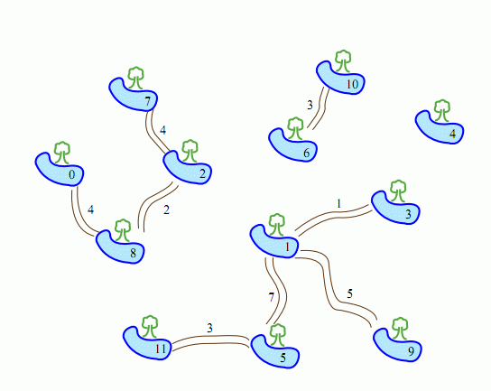
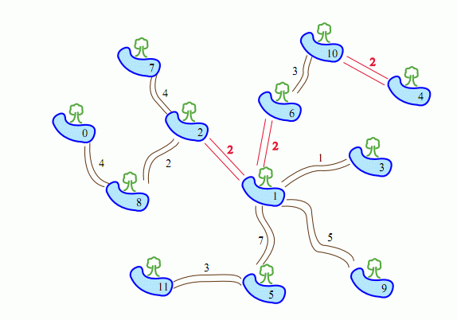

Serpent(水蛇)生活的地方有N个水坑，编号为0，...，N - 1，有M条双向小路连接这些水坑。每两个水坑之间至多有一条路径（路径包含一条或多条小路）相互连接，有些水坑之间根本无法互通(即M ≤ N-1 )。Serpent走过每条小路需要一个固定的天数，不同的小路需要的天数可能不同。Serpent的朋友袋鼠希望新修 N - M - 1条小路，让Serpent可以在任何两个水坑间游走。袋鼠可以在任意两个水坑之间修路，Serpent通过每条新路的时间都是L天。袋鼠希望找到一种修路方式使得修路之后Serpent在每两个水坑之间游走的最长时间最短。
举例说明

上图中有12个水坑8条小路( N = 12, M = 8)。假如L = 2 ,即Serpent通过任何一条新路都需要2天。那么，袋鼠可以修建3条新路：
水坑1和水坑2之间；
水坑1和水坑6之间；
水坑4和水坑10之间。

上图显示了修路后的最终状态。从水坑0走到水坑11的时间最长，需要18天。这是 最佳结果，无论袋鼠如何选择修路方式，总会存在一些水坑对，Serpent需要18天 或者更长时间从其中一个走到另一个。